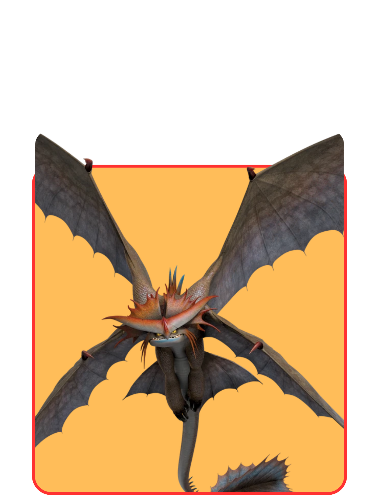
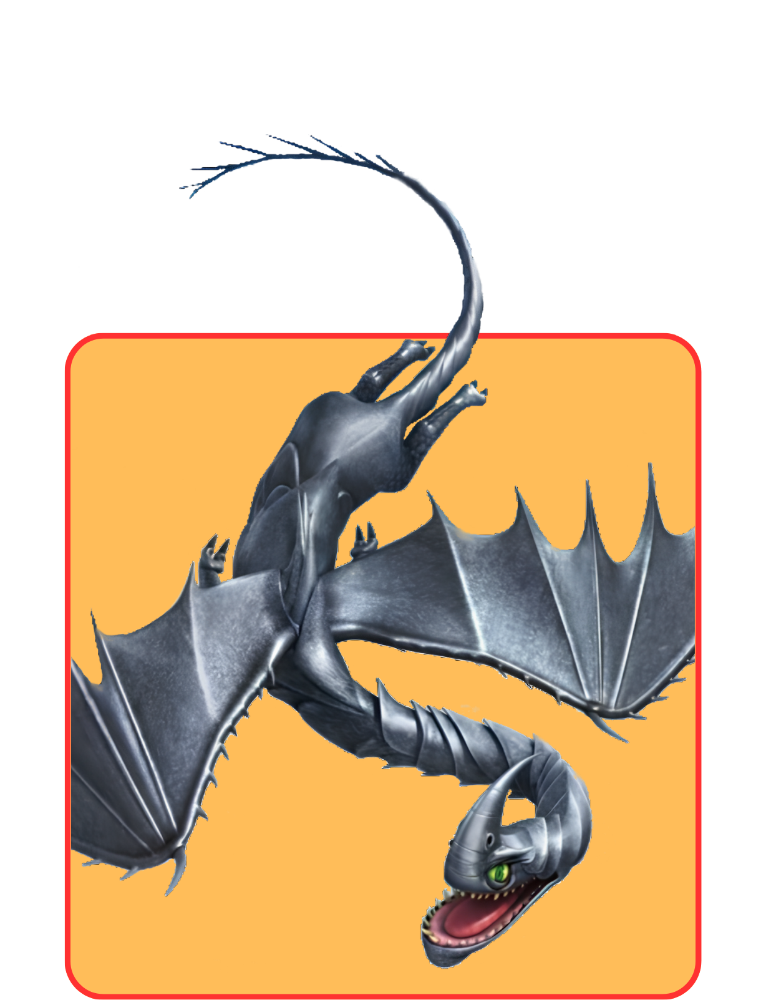
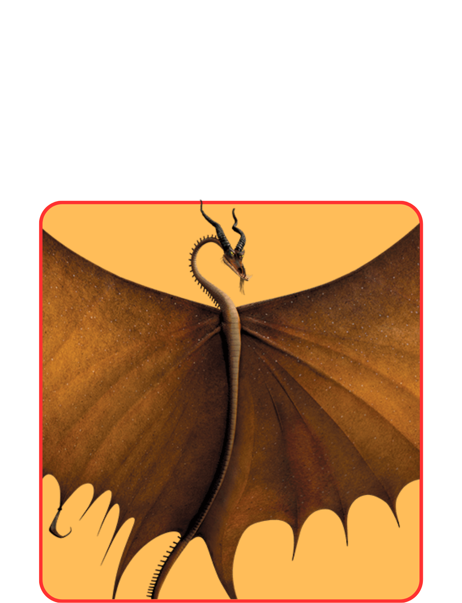
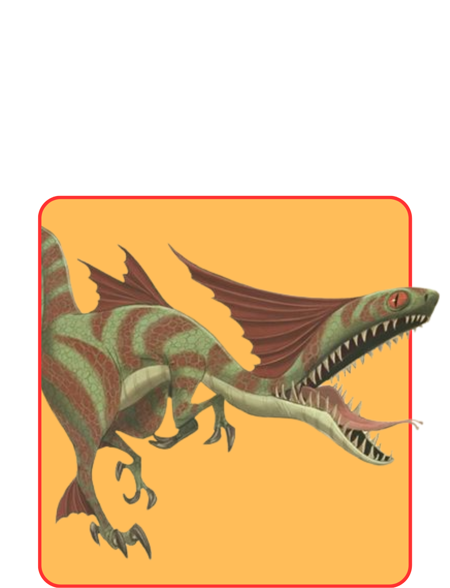

Sharp
Sharp Class dragons are vain and prideful, and all of them possess sharp body parts. Most of these dragons can fire extremely sharp and poisonous projectiles from their bodies, which can quickly be regenerated. Sharp class dragons adore being stroked and generally made a fuss of. They especially love being complimented, due to their nature.

STORMCUTTER

RAZORWHIP

TIMBERJACK

SPEED STINGER